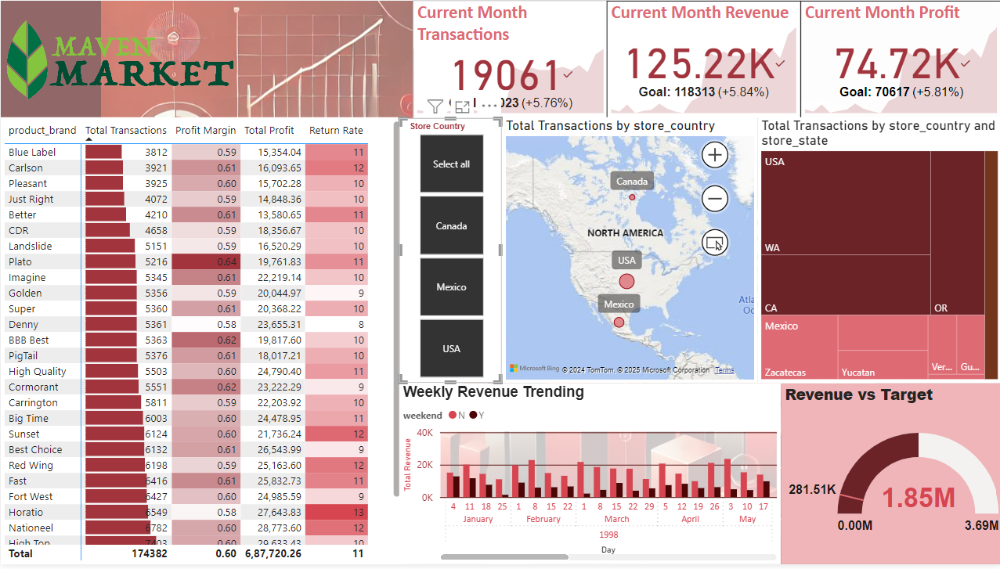

Built an interactive Power BI dashboard analyzing sales performance, customer behavior, and regional trends for a grocery chain spanning Canada, Mexico, and the U.S.

Using transactional, product, customer, and operational data from 1997–1998, the goal was to turn complex datasets into a cohesive, visual decision-support tool. This involved the full BI pipeline—starting with SQL-based integration, Power BI modeling, and ending with a dynamic, insight-rich dashboard.
Unified data from 7+ tables using SQL joins and shaped it with transformations like null handling, data type normalization, and calculated columns such as Weekend Indicator, Customer Priority, and Years Since Remodel.
Created custom DAX measures for key KPIs like Total Revenue, Profit Margin, Return Rate, and YTD Revenue, supported by rolling averages and dynamic targets.
Visual elements included KPI cards, trendlines, regional treemaps, gauge charts, and interactive filters (by country, brand, and time), allowing deep data segmentation and insights.
- Cormorant and
Carrington brands led in performance.
- U.S. stores surpassed others in both revenue and transaction
count.
- KPI card showed a
5.84% revenue surplus for the
month.
- Return rate flagged at 11%, signaling areas for product
improvement.
- Weekends accounted for 28.4% of transactions,
aiding scheduling decisions.
The dashboard not only improved reporting but also empowered stakeholders with real-time, actionable intelligence—enabling informed decisions in operations, marketing, and planning.
- Add predictive analytics (e.g. sales forecasting)
- Enhance customer segmentation
- Enable deeper drill-through capabilities
This project stands as a benchmark for transforming raw operational data into clear, interactive insights that drive measurable impact.